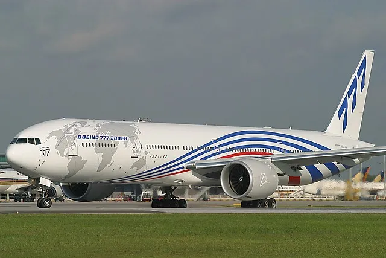
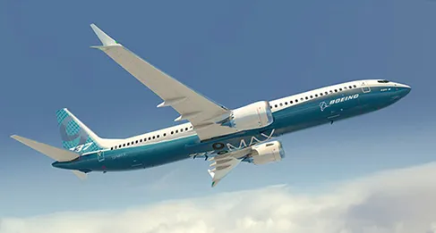
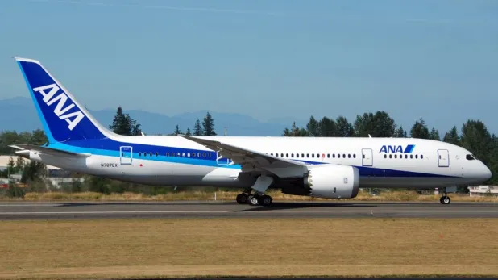
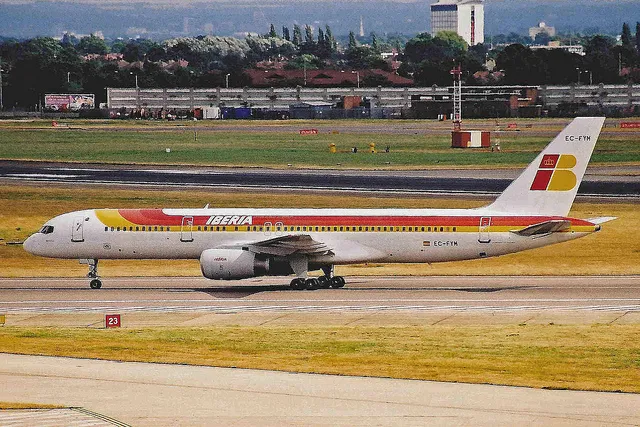

AVIONES
El Boeing 747 figura como número 1 del mundo, porque muchas compañías aéreas dependen de este avión. Algunas los usan para vuelos comerciales mientras que otras como aviones de carga. El avión número uno del mundo.
Boeing 777. La razón característica que hace a este avión tan popular es su gran capacidad. Este aparato puede acomodar de 300 a 550 pasajeros. Es una de las mejores opciones para las compañías aéreas que ofrecen vuelos internacionales.
El Boeing 737 aparece en tercer lugar. Las aerolíneas comerciales cuentan con modelos como el -600, -700, -800 y -900 ER. Puesto que es uno de los aviones más vendidos de Boeing, la constructora norteamericana ha lanzado su último modelo, el MAX 737, que estará operativo para 2017.
Boeing 787 Dreamliner. Ha supuesto una innovación en el mundo de los vuelos comerciales, principalmente debido a su eficiencia en el consumo de combustible. Es también más económico, ahorra energía, hace menos ruido y cuenta con otras innovaciones de las que el pasajero puede disfrutar durante el vuelo.
El quinto lugar es para el Boeing 757, uno de los más producidos por el constructor aeronáutico norteamericano desde 1981 a 2004. Su principal avance tecnológico es el diseño de las alas, que mejora la aerodinámica.